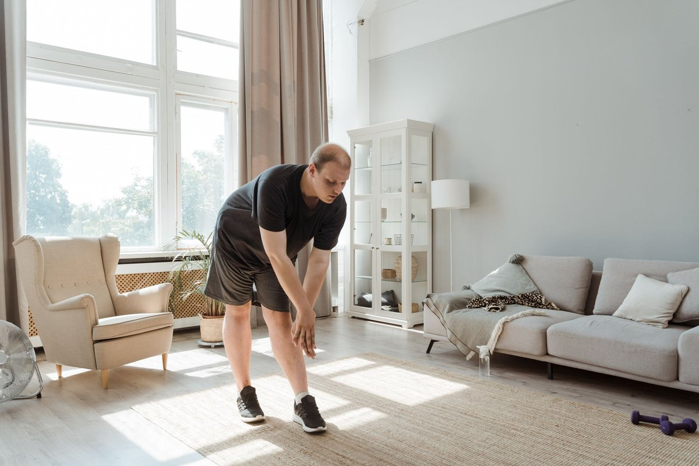
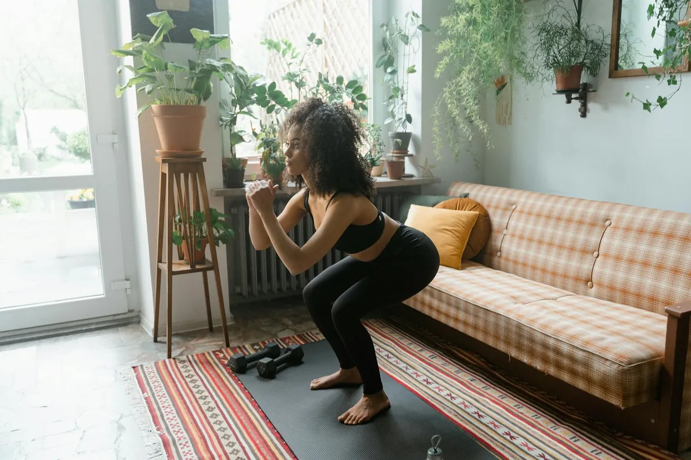

Feel More Energized with This Practical Home Workouts Routine

Key takeaways
- I used to think getting strong required a $100 monthly gym membership and two hours of travel time every single afternoon.
- Standing in my tiny studio apartment between my bed and my kitchen sink, I felt completely paralyzed by the lack of space and energy to b
- Focus on: Small-Space Strength Training That Actually Works.
I used to think getting strong required a $100 monthly gym membership and two hours of travel time every single afternoon. Standing in my tiny studio apartment between my bed and my kitchen sink, I felt completely paralyzed by the lack of space and energy to build a real routine using effective Home Workouts.
It turns out that pushing your body in a tight living room doesn't require bulky dumbbells or fancy cardio equipment. **Your own body weight and a patch of floor are more than enough.**
Small-Space Strength Training That Actually Works
When space is limited, the key is maximizing time under tension with slow, controlled movements. You can target every major muscle group without bumping into your coffee table.
Start with tempo push-ups, taking three full seconds to lower your chest to the floor. Follow that with slow wall-sits or Bulgarian split squats using the edge of your sofa for leverage.
I like to weave in a quick related healthy tip to keep my heart rate up without needing to jump around and annoy my downstairs neighbors. If you need inspiration to reset your daily flow, check this another practical guide for staying active at home.
The 2-Minute Win
Clear a space the size of a yoga mat right now and do 5 slow, deep bodyweight squats followed by a 30-second wall sit. Notice how instantly your mind shifts from sluggish to alert.
Fueling Your Body and Energy Levels
Building strength without leaving your house takes more than just physical effort; your gut health plays a huge role in your daily stamina and bounce-back speed. **When your digestion is sluggish, your workouts feel twice as hard.**
I started prioritizing my inner ecosystem alongside my movement routine, and it changed everything about my recovery. For direct gut support that keeps your daily routine on track, I personally rely on a Daily Synbiotic Capsule to balance my digestion and sustain naturally high daily energy.
Pairing daily gut support with simple movement helps eliminate that heavy, midday slump. You can also read this similar wellness insight on keeping energy consistent throughout busy workdays.
Pro-Tip: Focus on dynamic body weight exercises like doorframe rows, slow mountain climbers, and single-leg glute bridges to hit every muscle without extra gear.
Building Habit Momentum in Tight Spaces
Perfectionism is the ultimate enemy of feeling fit in a small apartment. **Doing ten minutes of focused work always beats waiting for the perfect workout scenario.**
Keep your daily goals ridiculously small so you can execute them even on tired days. When you want to stay consistent with this approach, track your completed days on a simple wall calendar.
If you're eager to build a broader routine, take a moment to explore more home-workouts guides designed for real, daily life.
Educational only — not medical advice.
Disclosure: This page may contain affiliate links.
Recommended Reading
- The Ultimate Guide to Daily Hydration: Boost Energy & Wellness
- Quick Home Strength Workouts for Any Space
- No-Equipment Strength for Small Spaces: Get Stronger
More in home-workouts
How I Finally Made Home Workouts Stick in a Tiny Apartment
Discover how I made Home Workouts stick in a small apartment using no equipment. Build strength and stay consistent with
Read article →
home-workoutsHome Strength: No Equipment, Maximum Impact
Discover how to build strength at home with no equipment. This guide offers effective, space-saving workouts for real re
Read article →